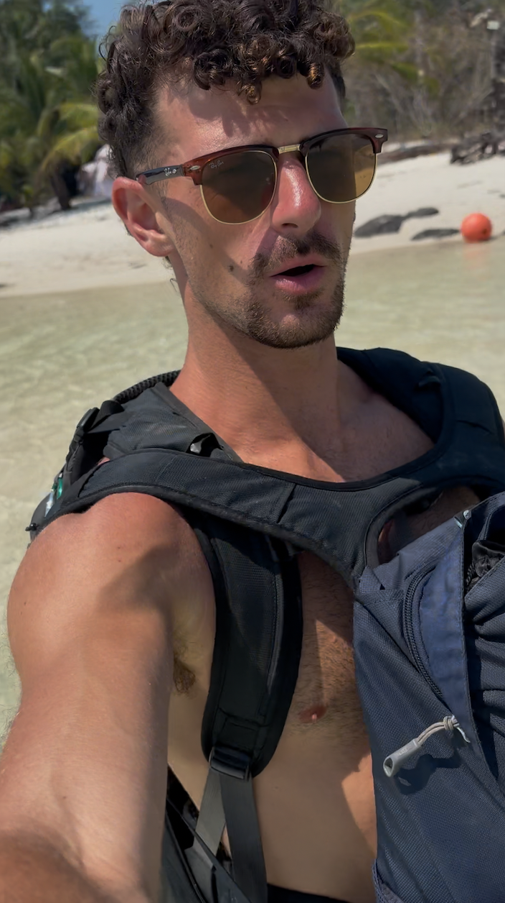
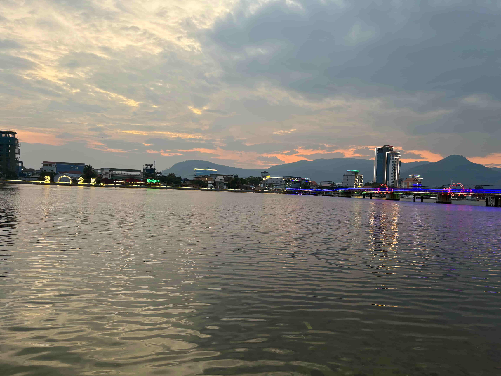
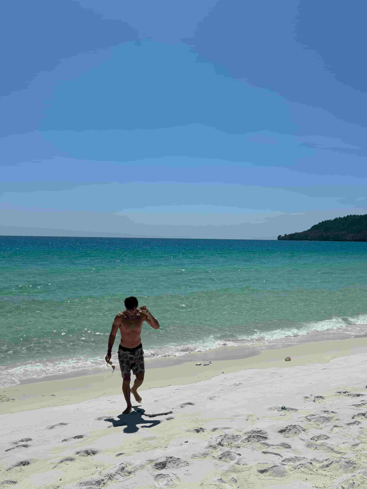
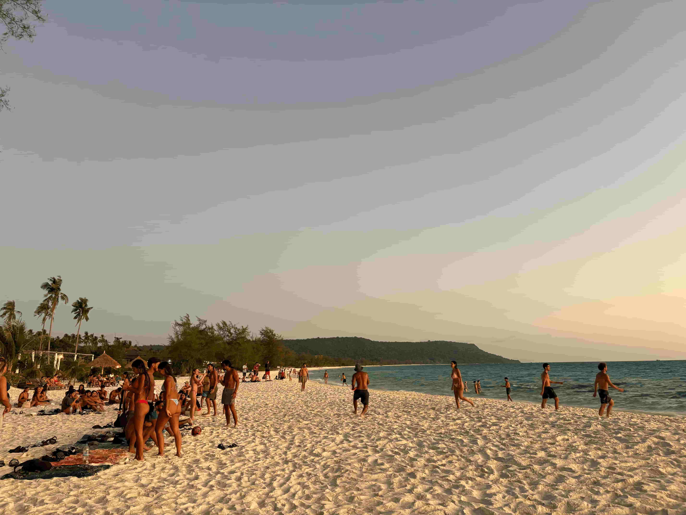
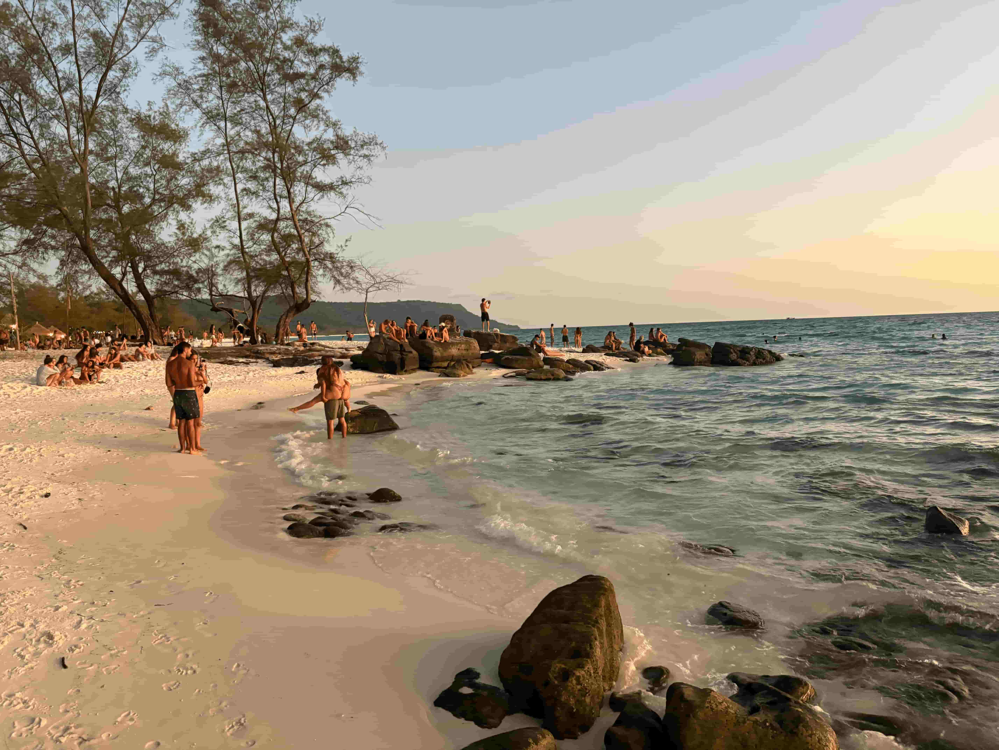
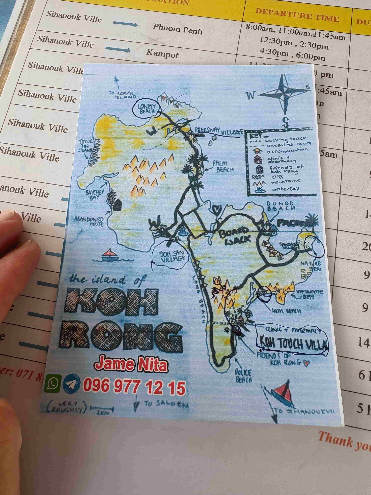
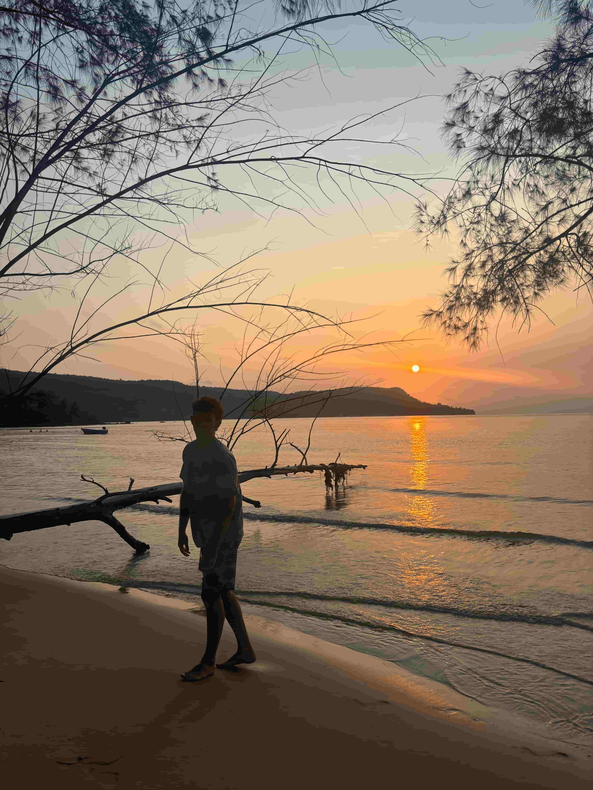
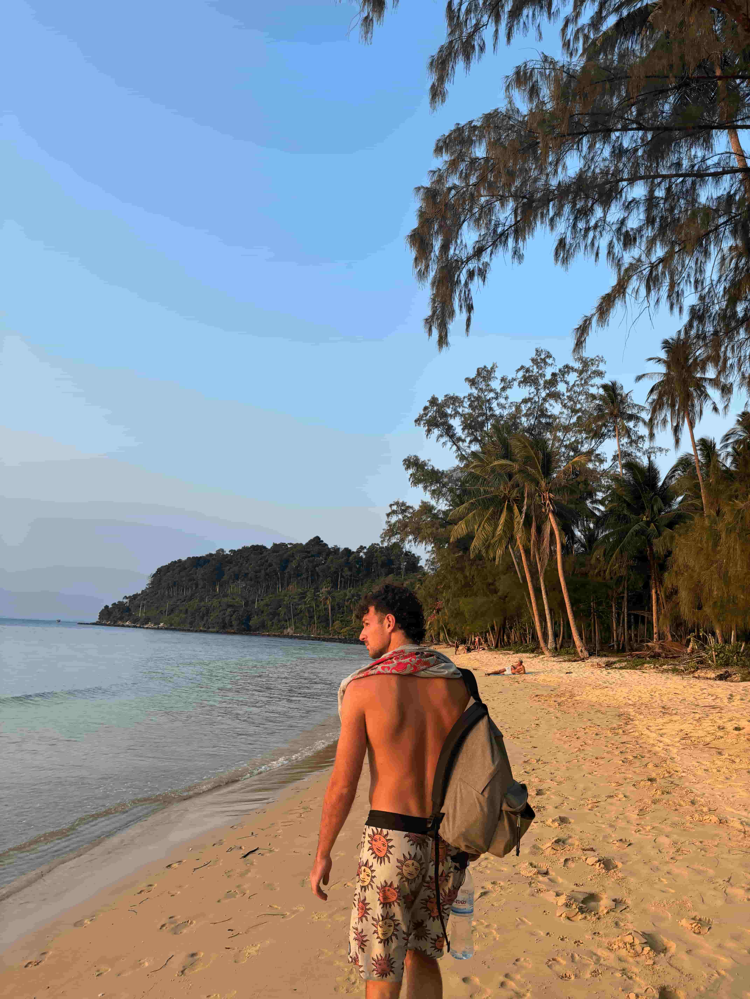

March 15th 2025, Siem Reap, Cambodia
Welcome to Siem Reap, the gateway to the celestial city of Angkor, the largest religious monument on the planet. I will have ample time to learn about Angkor and tell you about it here. For now I want to talk about last night and today. Last night I went to Shabbat diner at Chabad of Phnom Penh. The rabbi told me to sit at the English speaking table for it to be easier for me. The English speaking table consisted of A Canadian man in his late 60s, an American woman in her late 50s, and a danish guy in his late 40s. I was actually really surprised about all the great conversations we had, way more interesting and deep than sitting with 20 year old Israeli backpackers. So let us go character by character. The Canadian man currently lives in Kep Cambodia, retired and taking it slow. The most surprising thing was he used to live in Palm Harbor Florida for 9 years! This is where I went to high school and properly live. He travelled around the world to over 50 countries and had international businesses. He sold insoles to shoes, yarn and more. He loved the jibber jabber but he gave some good insights into life. When you walk outside your door opportunities come at you every day. 1 in a million stick. He never planned any of his businesses, just was open to opportunities that came his way. He said stay healthy, everything else is bullshit. Finally he mentioned how people all across the world are essentially the same. Food, water, shelter, clothes and a better future for their children is what everyone wants. People will go to extreme lengths to ensure a better future for their children The older American women hailed from New York. She lives in Phnom Penh retired as well. She worked for USAID all across the globe, in Senegal and other cool places. She retired from USAID just before Trump cancelled worldwide funding. She said how her coworkers all lost their jobs and were told to return to the US. It was really cool to see older North American people so energetic and adventurous and well travelled. Lastly the Danish guy was pretty interesting. He lives in Sweden but is Danish. He just found out his father is Jewish and got connected with Chabad. He is traveling around Asia to see where he could retire. He likes Chiang Mai because they have a pickleball community. The guy was a little odd but had some good topics to chat about. We talked about various forms of renewable energy, how nuclear is obviously the best. We discussed which country will implement UBI first. I said UAE. I think the UAE will pioneer futuristic economics and policies. We also talked AI and he gave some weird ideas. Overall I really enjoyed talking to these older people. I believe I have mentioned I actually typically enjoy talking to them rather than people my age due to the depth and the amount I can learn. Ok so today I took a 6 hour bus to Siem Reap. It seems like a cool city with lots to explore other than the temples. I met a young Korean kid about 12 years old and maybe his older brother at the sauna today. The young Korean boy told me I was very handsome. At first I thought it was weird but I guess it’s just a cultural difference. When I was in Korea 2 years ago a Korean guy also told me I was handsome in the sauna too! I have only been told I am handsome by guys from Korea, and one guy from lao. That made me think, should guy friends compliment their guy friends for being handsome more in the west? Anyway these Koreans were cool and are in Siem Reap for 4 months doing a wake boarding camp. The older guy is a professional wakeboarder. I am considering going to the cable park tomorrow. Anyway I am tired, I was not planning to write today but there is always something worth sharing!
March 14th 2025, Phnom Penh, Cambodia
One thing I wanted to mention before I forget is about toilet paper. I have been so desensitized to it since being in SE Asia for three months that I forget how absurd it is. You cannot throw toilet paper in the toilet, you must place it in a trash can. At first I thought this was funny and not so serious. However, in literally every toilet, whether a hostel, restaurant, or cafe, it explicitly has signs that say do not throw toilet paper in toilet, put it in a trash can. This is because the plumbing systems are so bad here that it easily clogs the lines. At first I never threw it in the trashcan because that is weird, but now I do since it is so prevalent. Anyway today I chilled heavy. I have been taking these past two-three weeks in Cambodia to recuperate my energy for an exciting next couple of months. As you remember I was getting burnt out of traveling after Lao. I feel like these past couple of weeks has really helped get me excited to do adventurous things on the go again. I am stoked for Angkor Wat equinox, China and the Ha Giang Loop in Vietnam. It has been really great taking it slow and working on my body and mind intensely the past weeks. Cambodia was placed perfectly in my trip. I really like Cambodia because honestly there is not much to do! Lao is so adventurous and rugged, Thailand is too big and party, and Cambodia fits right in when you need to chill the most. Last night I went to Chabad for Purim and it was nice. I went to the casino with some Israelis after which was fun. They love to gamble. I only did 20 dollars on roulette. Today I needed to delete some pictures from my phone because my storage is getting full. Going through my pictures made me emotional, grateful, and confident on my path. Specifically I look back on videos I took 6 months ago before leaving Dallas and can see how evolved and a new person I am. Everything I spoke into existence back then came to fruition. This trip has made me a better man, human, and friend. It has challenged me and pushed me to grow. Honestly I barely recognize the guy 6 months ago. It is like my mind and body got a major software update. Headed to Siem Reap for 6 days tomorrow early!
March 13th 2025, Phnom Penh, Cambodia
Today I finished 700 pages of The Three Musketeers. This was easily the longest book I have ever read. I really liked the Black Tulip by Alexandre Dumas so I went to read his most famous work. I liked it, but I did not love it. I actually prefer the Black Tulip. Nevertheless I learned about 17th century France society, culture, and politics. Here are the main things I took away. The Three Musketeers and D’Artagnan are super faithful and trustworthy friends. They are friends who will have your back and fight to the death no matter the reason. I wonder how many friends I have like that today? Definitely less than 10, maybe less than 5. I think that is good actually. I hope to be a friend that people know is trustworthy, faithful and will defend them at all costs. It is really hard to find people like that. I always pride myself on being the friend that calls, checks in, and asks my friends for updates. Sometimes I feel sad a majority of my friends do not do the same and rarely reach out to me first. I used to think it was a game, I am not going to reach out until they finally do first. But this is not a mature or evolved perspective. I will be loving, caring and thoughtful friend even if I do not receive it in return. Friends and people want to feel cared for. The second idea I learned from this book is respect in arguments. If two men have a dispute, they respectfully challenge each other to a duel. This is so different to today where drunk college kids throw haymakers at each other’s faces with no announcement. I think this type of respect is lost today. If I ever have a dispute I would like to treat it like the Musketeers and respectfully talk or duel it out. Now a third idea is the respect and forwardness in courting women. Today young men are even too afraid to talk to a woman in person, let alone tell them they are interested in them. In 17th century France courting a woman was very direct and respectful. You would make it clear your intentions and flower said woman with love and affection. I like this idea of being forward and direct. There is no time to waste on childish games. Finally, The Three Musketeers highlights a lot the powers of love. How love can corrupt people, kill people and save people. Love is the most powerful drug. All these lessons shine a light on how mature and direct society was. Now everybody wears a mask and disguises themselves behind social media, lies, or something else. Now that is the book update. Before reading another book I want to get back into writing. I love to write poetry and have been told I am quite good. I also want to write some intellectual essays. Brief sidetrack. This morning I went to the gym and sauna again and it was awesome. The most luxury life you could have is just doing healthy things for the body. Ok this is getting long but I realized something today. There are barely any sidewalks in SE Asia. As an Olympic city walker I do not mind this, I even prefer it. I love walking with a purpose, weaving in and out of motorbikes, tuk-tuks, and cars. Stepping over shit or trash or glass. It feels more raw. I walk so much it is great. This is also really healthy for the body. When a tuk-tuk driver tries to wave me down I think to myself, don’t they know Im a fit 24 year old man who is an Olympic city walker? Tuk Tuks are for old and lazy westerners. Ok last thing for real. Tonight is Purim. Arguably my favorite Jewish holiday. Last year Chabad in Dallas threw a great Purim Party with. Live band and awesome food. I think It should be stated that that party last year retired me from drinking. I drank way too much and got so sick. Literally since that time last year I have barely drank or had a desire to drink. It is almost the equinox and almost my 25th birthday. I have been taking my life, health and intellect into the next gear and want to finish this strong through my entire life! That was a fun post!
March 11th 2025, Kampot, Cambodia
Another day another good routine. Got to hit the gym this morning and sauna this afternoon. During the day I rented a scooter and drove to a pepper plantation and through Kep. The pepper plantation was actually pretty cool. I tried a variety of peppers from red, white, black, green, and more. The peppers are so pungent and so flavorful it is crazy. I honestly even thought about buying some they were so good. I also had pepper tea which was nice. On my drive back to Kampot I got pulled over at a traffic stop for not wearing a helmet. I had to pay 15 dollar fine. I typically wear a helmet but I sometimes they make my head itch so I did not wear one. Well it got me this time, the first fine of the trip. In the afternoon I was feeling super tired but I got the energy to go to the sauna. It made me reflect on my favorite sauna experiences. Here they are: Fukuoka Onsen Japan, Arashiyama Onsen Japan, Seoul Intercontinental Coex Korea, Russian Banya Dallas USA, Vientiane herbal steam spa Laos, and this Kampot bathhouse here in Cambodia. I like saunas and pools which are outside like in Japan. Also it is important they place nice Zen music and have a place to relax. I prefer when the sauna room is big rather than small. Also it is nice when scrubs are provided and herbs are placed in the sauna or steam room. Of course you need at least three temperatures of pools to plunge in. Today I did 3 minutes in 15 deg pool. It is not that cold but I was happy with the extended duration. Last thing I want to mention is my planned trip to China. As of December 17 2024, only 3 months ago, China allows for USA citizens to travel 10 days visa free is using China as a transit. That means you must fly from country A to China, then to a new country B after. I plan on going from Phnom Penh Cambodia to Chengdu China then to Hanoi Vietnam. I was about to book my tickets today after triple checking the visa free policy. There is not much info online about it so I asked CHATGPT. Mr. GPT said Cambodia and Vietnam may not work because they are in the same region. It made me second guess my trip. It would really suck if I spent on this money on tickets and get rejected at the border. But this is the adventure. I am going to book it and hope I can use the visa free travel. It is not a guarantee though. I am actually really excited to visit China and Chengdu if everything works out. Any way I go back to Phnom Penh tomorrow for a couple days to celebrate Purim and Shabbat at the Chabad there. After I will head to Siem Riep to enjoy the celestial city of Angkor Wat for the Vernal Equinox.
March 10th 2025, Kampot, Cambodia
Hostel dorm $5. Gym pass 1$. Sauna/Steam/Col Plunge $4. Fresh coconut $0.75. You can start your morning healthily and energized in Kampot Cambodia for about $10! I woke up and started my day just as described. I got a nice work out at a local gym and afterwords spent an hour at the sauna house. I have already said this but I love this routine. Going to the sauna and cold plunge gives my mind such clarity and my body much energy. At the sauna I met an older Canadian gentleman who lives in Kampot. I asked him his story. He moved here 5 or 6 years ago after he divorced his wife. His brother is a surveyor and told him about Cambodia. He married a Khmer girl and they live in Kampot. He rents out his house in Canada and it is enough to survive in Cambodia. He told me that sihanoukville, a coastal port city near Kampot, was where most expats used to live. 6 or 7 years ago the Chinese came to invest and build and starting building huge buildings and casinos, some never finished to this day. The expat community picked up and moved to Kampot and made it vibrant ever since. Also, Cambodia is the first place I see where prices are listed in dollar ahead of the local currency. Cambodia uses the US dollar (USD) alongside its local currency, the Cambodian riel (KHR), mainly due to historical, economic, and stability reasons. After the Khmer Rouge regime collapsed in 1979, Cambodia’s economy was in ruins, and trust in the Cambodian riel was low. The United Nations and international aid (especially from the US) flooded the country with US dollars in the 1990s, making it widely accepted. It has been a while since I have seen a US dollar and handled it so frequently! A note on economics. I haven’t written about economics in a while wow! I have been too busy being a hippy backpacker. I bought a coconut today for 3000 riel, or 75 cents. In Koh Rong at a local shop I bought a coconut for 5000 riel, or $1.25. Also in Koh Rong, but at a resort hotel I paid 12,000 riel or $3 for the same coconut! This is a classic case of price discrimination, where businesses charge different prices for the same product based on the consumer's willingness to pay. Ok back to my day. After the gym and sauna I found a viber cafe and got a poke bowl and finished my taxes. I had to download a VPN to access coinbase to upload my crypto returns. For some reason coinbase is blocked on Cambodian wifi. A quick refresh of what a VPN is: A VPN (Virtual Private Network) is a tool that encrypts your internet connection and hides your IP address, making your online activity more private and secure. I took me a while to get the right documents for crypto tax returns but I finally did it. After lunch and taxes I went to contemplate my mortality at the local 7-11. Well I did not go there with this intention, I went to get a water and protein shake. I ended up sitting at the 7-11 counter next to local Cambodian elementary school girls and it gave me some real perspective. Here I am a 24 year old American sitting at a 7-11 drinking a water next to elementary school Cambodian girls. For a second I thought what the hell am I doing. However, this is all the beauty in travel. There is no membrane separating cultures now. We can diffuse with ease like Osmosis Jones. Remember Osmosis Jones? It is only 1600 here at the time of writing this. I will probably chill and read and go to the night market later. Thanks for reading!
March 9th 2025, Kampot, Cambodia
Why is Kampot super cute? This morning I left the gem of an island, Koh Rong, after 1 week. I spent 2 whole weeks on the Cambodian Islands of Koh Sdach and Koh Rong and it was magical. There are even more islands I did not explore like Koh Rong Sanloem and Koh Ta Kiev. I felt like 2 weeks on the islands was a good amount of time, even though I could have easily spent more time. I only have a 1 month visa and wanted to balance out the beach with actually experiencing Cambodian culture. I rarely say this but Koh Rong is a place I want to come back to in my life. Typically on my travels I do not gravitate to a place to the extent I feel the need to come back. However, Koh Rong, Long Beach, and Koh Touch have my heart. I took a two hour speedboat catamaran to the port city of Kampot. I arrived having no clue what there is to do in this city. Backpackers sometimes overlook Kampot but I felt like it was necessary to go see a real Cambodian city. Kampot is home to one of the world’s finest peppers, known for its rich aroma and flavor. It has a Geographical Indication (GI) status, like Champagne in France. Kampot also has huge salt fields to explore as well. Upon entering the port the first thing I noticed was women in hijabs riding scooters. I have not seen any muslims in SE Asia so it made me research why I saw so many here. Muslims in Kampot belong to the Cham ethnic group, who have lived in the region for centuries. They are descendants of the ancient Champa Kingdom, which once thrived in now central and southern Vietnam. When the Vietnamese conquered the Champa, many Cham migrated to Cambodia. During the Khmer Rouge era (1975-1979), the Cham population faced severe persecution. However they persevered and thrive here in Kampot. See I already learned more about Cambodia than I have the past two weeks. Also I noticed Kampot attracts the older western men, similar to Don Det Laos. I think it is due to good warm weather, and cheapness. The hostel I am at is 5 dollars a night. I opted to treat myself to falafel and hummus plate for 12 dollar dinner, which is very expensive for Kampot. I will tone it down tomorrow. Any way as I always do, I walked the city first thing. I was a little pessimistic at first, but then I reached the coast and it was so beautiful. There are tons of viber cafes and walking streets and nice restaurants. I also found a sauna and cold plunge place right by my hostel! You know that is getting hit tomorrow. So why is Kampot super cute? Honestly I have been really impressed with Cambodian cities. The viber cafes and modern infrastructure you can argue surpasses parts of Thailand. I asked ChatGPT why Kampot is super cute and here is what it says: Kampot is super cute because it has a laid-back riverside charm, French colonial architecture, and a creative, artsy vibe. It’s a mix of old-world charm, backpacker energy, and Cambodian culture. French colonialism in Cambodia was part of French Indochina, which included Vietnam, Laos, and Cambodia. France controlled Cambodia from 1863 to 1953, shaping its politics, economy, and infrastructure while also preserving the monarchy. In 1863, King Norodom signed a protectorate agreement with France to avoid being taken over by Thailand (Siam) or Vietnam. In 1887, Cambodia was officially merged into French Indochina along with Vietnam.The French allowed Cambodia to keep its royal family, but real power was in the hands of French officials. During World War II, Japan briefly occupied Cambodia (1941–1945), weakening French control.After the war, Cambodian nationalists & King Norodom Sihanouk pushed for independence. In 1953, France finally granted Cambodia full independence without a war, unlike Vietnam’s long fight for freedom. Fascinating right? I also researched the Nazi occupation of Tunisia today and the concentration camps throughout Tunisia. I met an Israeli yesterday whose family came from Tunisia and fled the Holocaust. I never knew the Nazis invaded Tunisia or set of labor camps there. I would write about it here but you should research it yourself. Okay that was long. Overall Cambodia has really surprised me. I am going to use every day of my visa here. I look forward to vibing in Kampot a few days!


March 8th 2025, Koh Rong, Cambodia
Wake up. Order a mango passion fruit shake for a buck twenty-five. Walk shoeless to the gym in a bathing suit and no shirt. Workout hard for an hour. Protein shake. Take my motorbike, no shoes or shirt, to the most beautiful beach I’ve seen, Long Beach. Order a coconut and some lunch. Read, stretch, swim. This has been my mornings in the beautiful island of Koh Rong. I love this place and this routine. It leaves me energized, happy, and grateful. On Thursday everyplace was booked through the weekend. People come to Koh Rong for the weekend to party. Since I have effectively retired from partying since Thailand I have been able to completely avoid alcohol and the party scene for the beautiful routine I have described. Now I mentioned everyplace was booked on Hostelworld, on booking.com, and when I asked around town everyone was booked. This is the backpackers dilemma. Not planning too much in advance but still getting what you want. I spent Thursday walking around for two hours searching for a place. I found a place for one night. I didn’t want to leave Koh Rong yet so I searched for another place Friday night and succeeded. The owner said I’d have to leave Saturday because there was no space. I was prepared to go to another island. I woke up today prepared to checkout and leave but he told me I could stay! This is the beauty of backpacking. You don’t know what tomorrow will look like, but it will be beautiful. So instead of leaving to the other island I was able to stay another night. Maybe I will leave tomorrow or maybe I won’t! I am in the best shape of my life because I walk so much and workout a lot. I hope to never own a car again. In Dallas I drove so much. It’s so bad for your posture and your health. Walking barefoot and shirtless everywhere is so awesome. It feels primitive and good.
March 6th 2025, Koh Rong, Cambodia
I want to recount one of the best days of my life. Tuesday March 4th 2025. First I want to tell you about some of my internal findings. I grew up in Tampa Bay Florida, near the water, where beach and fish culture thrives. I would have never described myself as a beach or fishing boy, always choosing to play sports in the park more. I always viewed my brother as much more of a salty beach boy than me. Being here in Koh Rong, walking barefoot, drinking fresh fruit shakes and coconuts, eating seafood, has made me realize how much the ocean shaped my upbringing and impacts me today. I think people who are raised in warm beach climates are built different: more down to earth, active, and well rounded. So, even though growing up I never realized the impact of the beach and ocean had on me, I feel it in my veins now. I love waking up in the morning and going to swim in the sea. I love walking around barefoot. I love working out outdoors at the gym or beach. I love eating fresh coconuts and fruits and fish. I realized that living in big urban city is one of the worst things you can do as a human for your mind, body and soul. I hope to never live in an urban city again. It must be a smaller place surrounded by nature, beach or mountains. Side note about coconut water: Coconut water is nature’s sports drink, packed with electrolytes, hydration benefits, and essential nutrients. It’s low in calories and sugar compared to most commercial sports drinks, making it a great natural option. Coconut water is rich in electrolytes like potassium, sodium, and magnesium. One cup of coconut water has more potassium than a banana. Coconut water is one of the best natural drinks for hydration, heart health, digestion, and recovery. Just choose pure, unsweetened versions for the best benefits. Wow coco’s are the best. I also realized how much sugar is in drinks and food in the US. Ok now about Tuesday. I woke up and had coffee and a small breakfast at an Italian coffee shop. I FaceTimed my friend Jacob and we updated each other on life. Around noon I met up with Wisdom, a local Cambodian. I bought mushrooms from him to take on the beach this afternoon. Mushrooms are not a drug, they are a tool for radical self improvement, reflection and learning. I am not ashamed to tell my blog readers I have taken mushrooms because they have made me a more caring, loving, compassionate, and focused human. If anyone is looking to understand and grow themselves more I highly recommend trying. Rachel and I drove our scooter to the most beautiful beach I have ever seen in my life, Long Beach. The water is crystal clear, the sand super white and squeaky, and the beach goes on for a long time on a beautiful cove surrounded by jungle mountains. We dropped our scooter off in some bushes and walked. We came across a beautiful piece of beach where many Israelis were chilling there. It was literally a secret Israeli beach! We sat and talked and laughed and cried. It is crazy how many layers of your ego, of your self, there are. We are all so ignorant as to what shaped us to who we are today. The human psyche is like an onion, and you can go infinitely far to explore why the way you are. It takes real hard inner work. In the end, understanding your self on a deeper level makes you more loving, understanding, and strong. We talked about learning from our parents, how the cycle of life is beautiful. How grandparents teach their children who teach their children. I wish to build a beautiful family one day and teach my children all that I have learned.I thought about the fragility of life, the importance of health. I gained so much perspective and clarity. I am so grateful for my life, my parents my friends. I am grateful for my travels. Sometimes I get numb to the experiences and do not realize how amazing they are. It gave me perspective on how beautiful my life and travels are and the path I am on. I pride myself on being a good listener, to being a faithful and trustworthy friend. I wish to be more loving and tell the people I care about I love them more. The infinite love energy force floored me. This you can call G-D, you can call it whatever you want. It knows no religion, no boundaries, and is pure oneness. I laughed I cried and I swam. I saw the most beautiful sunset. After everything was said and done I drove the scooter back in the dark down the craziest road and hills. I realized and internalized the importance of talking about thoughts in words to understand them deeper. Share it verbally with people to really make an impact on yourself. I learned this from Chassidus but did not internalize it until now. I could say so much more but this is a glimpse. I love you!



March 6th 2025, Koh Rong, Cambodia
I am currently in Koh Rong, Cambodia, the main island of Cambodia. It is without a doubt one of my favorite, maybe my favorite place of my whole travels. I have been here for 5 days, barely on my phone, walking with no shoes, and drinking fresh coconuts. I am going to give a recap of my first day here, Sunday March 2nd and will give updates of the rest of the time in another post. On Sunday I arrived in Koh Rong and went to a beautiful beach, named Lonely Beach, secluded on the north end of the island from everything. There is only one bungalow/bar/restaurant there. Rachel and I did not book any accommodation and were lucky that the Lonely Beach owner had a dorm room available. We slept outside on a wooden platform with 6 other beds. It was really cool sleeping out in the jungle on the beach so removed from everything. At night we swam with bioluminescent plankton. I have seen these plankton before in Florida but here it was so beautiful and amazing. These glowing organisms are a type of marine plankton, specifically dinoflagellates—tiny, single-celled algae. They use a chemical reaction to produce light, a phenomenon known as bioluminescence. The plankton contain an enzyme called luciferase and a molecule called luciferin.
When the plankton are disturbed, the enzyme reacts with oxygen and luciferin.
This reaction releases energy in the form of a blue-green glow, which is most visible in dark surroundings. Nature is so damn cool. I really enjoyed going straight to lonely beach away from all the main action. We drove a motorbike there and it was extremely hard to reach, making it even more special. The owner of the lonely beach bungalows was an old French guy born with extremely loose hips. He moved here 15 years ago, speaks fluent Cambodian, and wanted to do something he loves and caress about. The restaurant he has is really good too. I think this island is still in its infancy and would be a great place to invest.


